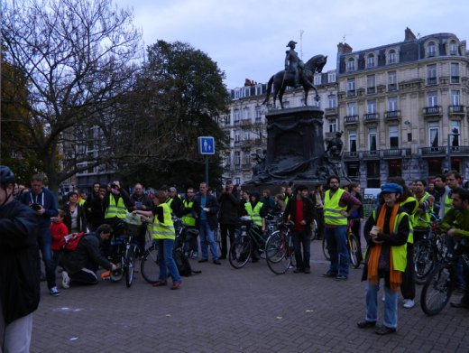
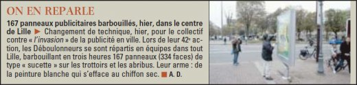
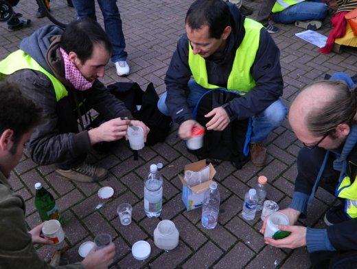
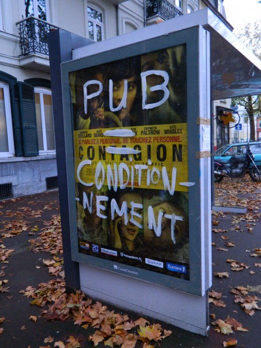

| |
Site dédié à la publication d'informations communiquées par le Collectif des déboulonneurs. En aucun cas ce site n'appelle à des actions illégales. | |
 |
||
|
Accueil du site > Lille > 42e Action du Collectif des Déboulonneurs de Lille – 5 Novembre (...)

Compte rendu de l’actionHeure de l’action : 16h – 19h Lieu : Barbouillage au blanc d’Espagne en itinérance dans les rues de Lille. Cinq quartiers touchés : Centre, Wazemmes, Vauban-Esquermes, Moulins et Mairie-Zenith, par quatre équipes à vélo et une équipe piétonne. L’action a débuté par le barbouillage d’un panneau place Richebé en présence de tous les activistes. Elle s’est terminée par le barbouillage collectif d’une aubette à Mont-de-terre. Nombre de panneaux touchés : 165 supports publicitaires de 2 m2 (aubettes et sucettes) et 2 panneaux de 12m2. Slogans : Outre les slogans habituels (Faites l’amour, pas les magasins, Qui paie la pub ?, Ici bientôt un arbre, Pub = pollution visuelle, Ville vendue à la pub, etc), nous avons pris du plaisir à répondre directement à certaines publicités : La Pub fait grossir (publicité pour des gâteaux), L’abus de pub est dangereux pour la santé (publicité pour de la bière), Mille milliards de publicités (dans la bouche du Capitaine Haddock). Un tract fut placé avec du ruban adhésif sur chaque support barbouillé, expliquant l’action et mentionnant le site des déboulonneurs. Nombre d’activistes : 40, munis de pinceaux et pots de confiture garnis de blanc d’Espagne, tous avec un gilet jaune de la sécurité routière. Nombre approximatif de passants-spectateurs : Beaucoup ! Quelques grincheux, mais la grande majorité saluant cette action antipub non-violente qui ne dégrade rien. Nombre de journalistes présents : 1 de La Voix du Nord, 1 de Nord-Eclair et 1 de la radio locale RCV. Attitude de la police : Très présente au lieu de rendez-vous, mais elle n’était pas là pour nous (une autre manifestation avait lieu dans l’après-midi au même endroit). Une seule équipe a dû expliquer l’action à la police municipale qui leur a demandé de nettoyer un panneau. Une fois le panneau nettoyé et après avoir bien discuté, ils ont pu reprendre l’action sur le panneau suivant. Plusieurs équipes ont simplement croisé des policiers à vélos. Retombées presse :

Voix du Nord (6 novembre)

Communiqué de Presse du 6 novembre 2011Les Déboulonneurs sont de nouveau entrés en désobéissance civile ce samedi après-midi. Une quarantaine de citoyens ont barbouillé les trop nombreux panneaux qui encombrent nos trottoirs. Cinq équipes se sont déployées dans Lille, à pied ou à vélo. Au total, 167 supports (abribus et sucettes) ont été touchés, soit plus de 300 publicités. Nous avons inauguré un nouveau mode d’action, en s’inspirant des déboulonneurs de Rouen : les publicités ont été barbouillées avec du blanc d’Espagne. Cette peinture biodégradable s’effacera d’un simple coup de chiffon. Lors de cette action massive, les barbouilleurs, agissant à visage découvert, n’ont pas été inquiétés par les forces de l’ordre. Inlassablement et jusqu’à gain de cause, c’est-à-dire jusqu’à la réduction significative de la publicité dans l’espace public, les déboulonneurs continueront d’agir. Communiqué de Presse

|
|
Site utilisant SPIP - Hébergement Ouvaton
|